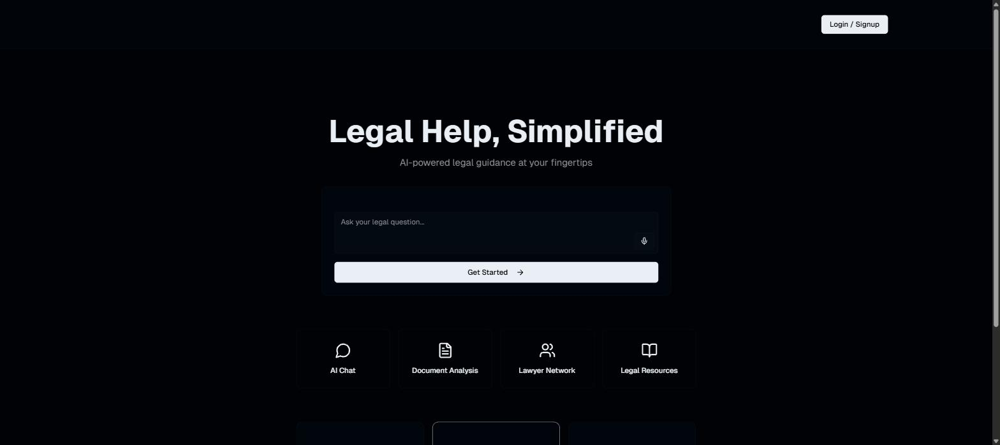
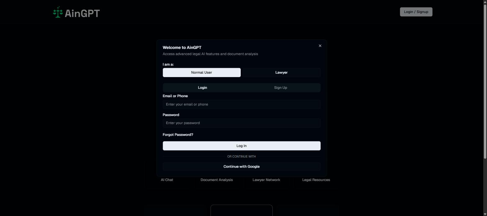
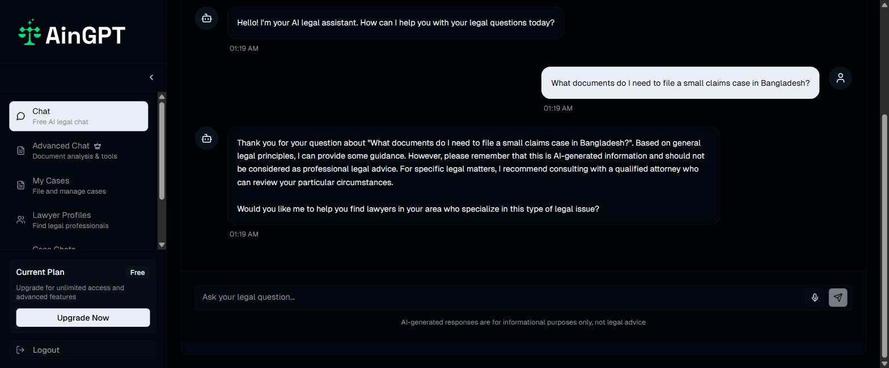
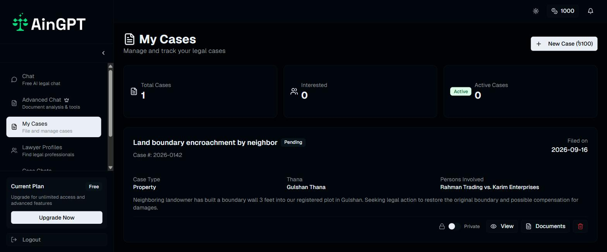
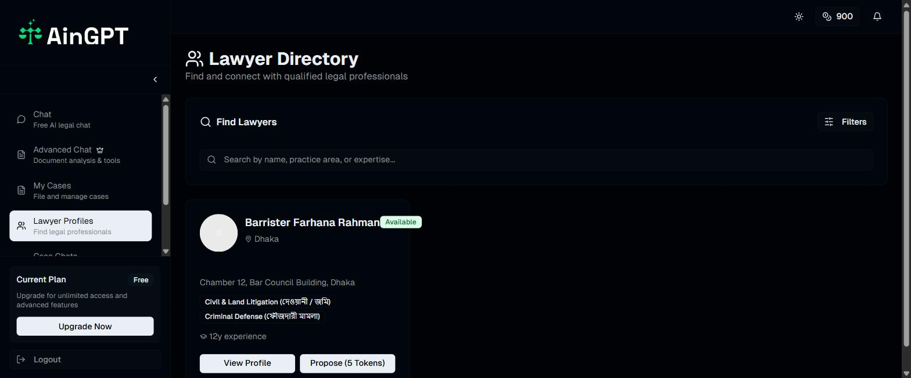
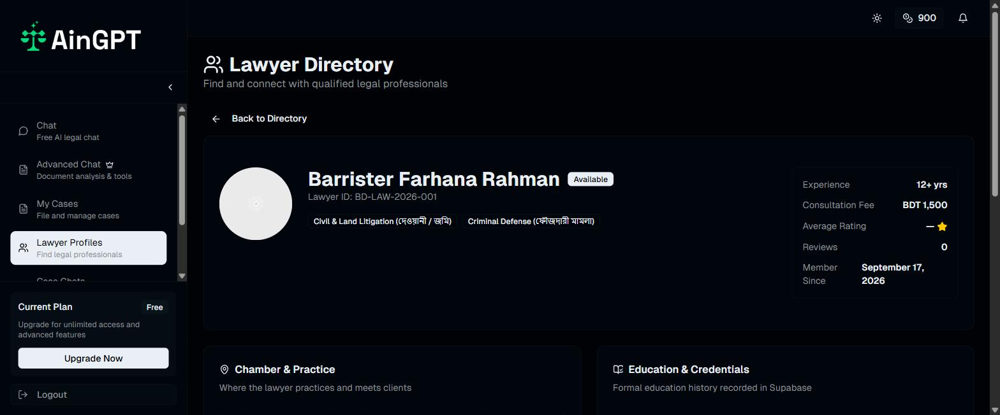
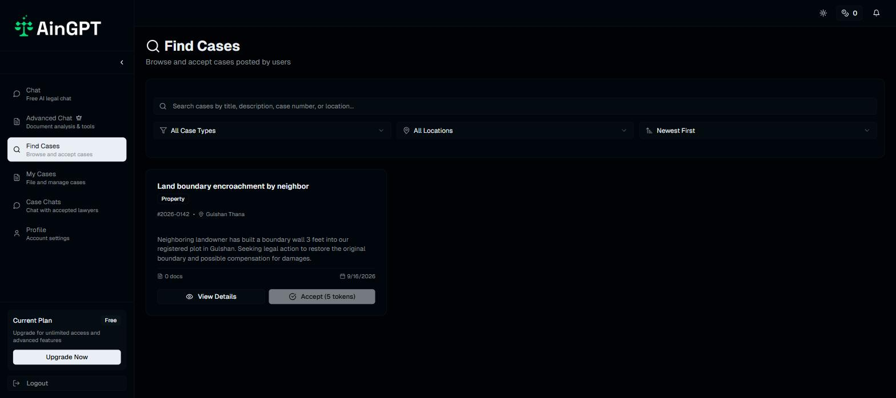
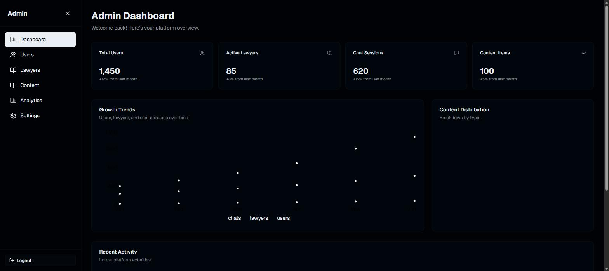

A legal-help marketplace for Bangladesh: an AI intake chat for the public, a token-gated case pipeline for lawyers, and one Supabase backend holding both sides together.
Most people who need a lawyer in Bangladesh don't know where to start, and most lawyers don't have a reliable channel for qualified leads. AinGPT sits between them: a free AI chat triages a visitor's question, then routes them toward filing a formal case or browsing a directory of practicing lawyers — while lawyers work a case marketplace on the other side of the same database.
The product had to support two structurally different users (the public and licensed lawyers) from one codebase, with separate sign-up flows, separate dashboards, and a shared case object that both sides can see, act on, and chat about once a match is made.
The landing page leads with a guest chat box rather than a pricing page or a sign-up wall — anyone can type a legal question before deciding whether to create an account. Signing up asks a visitor to declare a side up front: Normal User or Lawyer, each with its own form, its own Supabase-backed session, and its own dashboard on the other side of auth.


Once inside, a user's free-tier chat gives general guidance and a nudge toward finding a lawyer — it's explicitly framed as informational, not legal advice. Paid tiers unlock an Advanced Chat with document analysis; every tier can file a case, and every filed case becomes something a lawyer can find.

File a case (thana, dhara/section, register date, involved parties) for a flat token cost, then track it through Pending → Active → Completed / On Hold.
Filter by practice area and location, read a lawyer's experience, fee and credentials, then propose a case for a small token spend.

Lawyer profiles carry the credibility signals a client actually checks before hiring someone: years of experience, consultation fee in BDT, chamber address, education history, and bilingual practice-area tags (English with the original Bengali term alongside it, since that's how the profession is actually described locally).


A public case posting shows up in every lawyer's Find Cases feed, filterable by case type and location. Accepting one costs tokens and creates a case_acceptances row; that acceptance is what unlocks a scoped chat thread between that lawyer and that client.

Case row created in cases, optionally marked public.
Token spend logged in lawyer_tokens; a case_acceptances row links lawyer ↔ case.
A chat_conversations row is created against that exact acceptance — one thread, two participants.
Attachments upload to a per-case folder in the chat-files storage bucket.
A separate admin surface rolls the platform up into totals and trends — users, active lawyers, chat volume, content library size — the numbers an operator would actually watch week to week.

Next.js App Router handles both UI and API routes; every write that touches money, tokens or another party's data goes through a server route using Supabase's service-role client, never the browser client directly. Next.js middleware gates /user_dashboard and /lawyer_dashboard on an active Supabase session and bounces anyone else back to the landing page.
| Storage bucket | Access | Holds |
|---|---|---|
| user-profile | Public | User & lawyer avatars, keyed by user_id |
| case-documents | Service role only | Filed-case attachments |
| chat-files | Service role only | Attachments sent inside a case conversation |
| advanced-chat | Service role only | Documents uploaded to the paid-tier Advanced Chat |
The schema runs to roughly twenty tables: users and lawyers as the two identity tables (each with its own auth_user_id back to Supabase Auth), cases / case_acceptances / case_requests for the marketplace pipeline, chat_conversations / chat_messages for case-scoped messaging, and token-ledger tables (user_tokens, lawyer_tokens) that log every spend rather than just decrementing a balance.